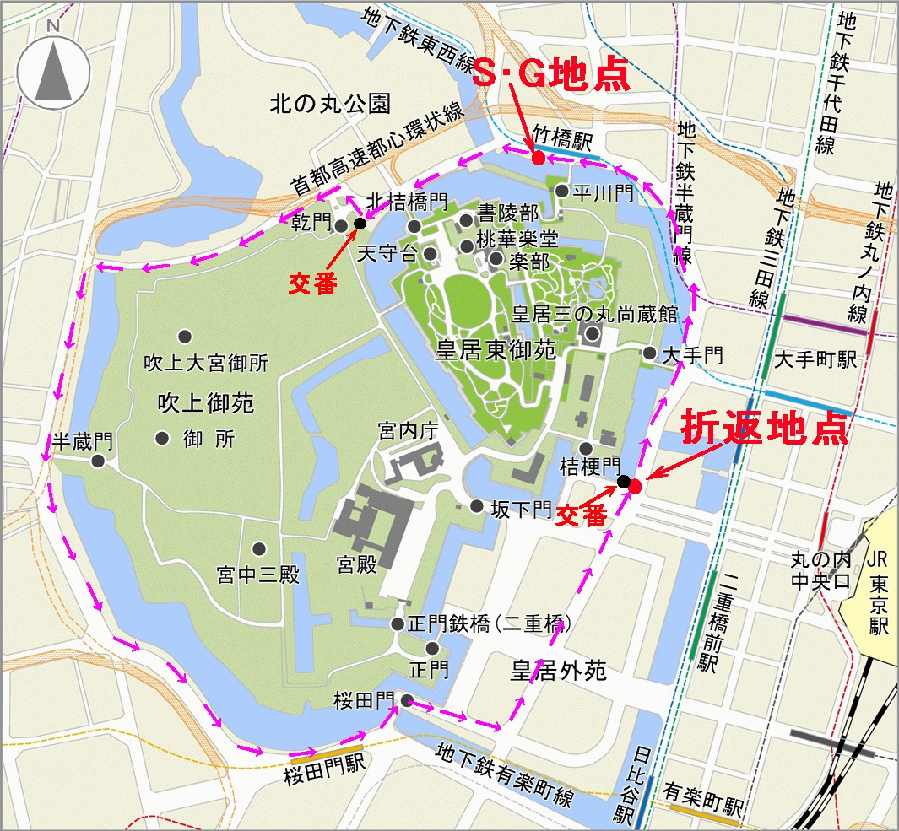
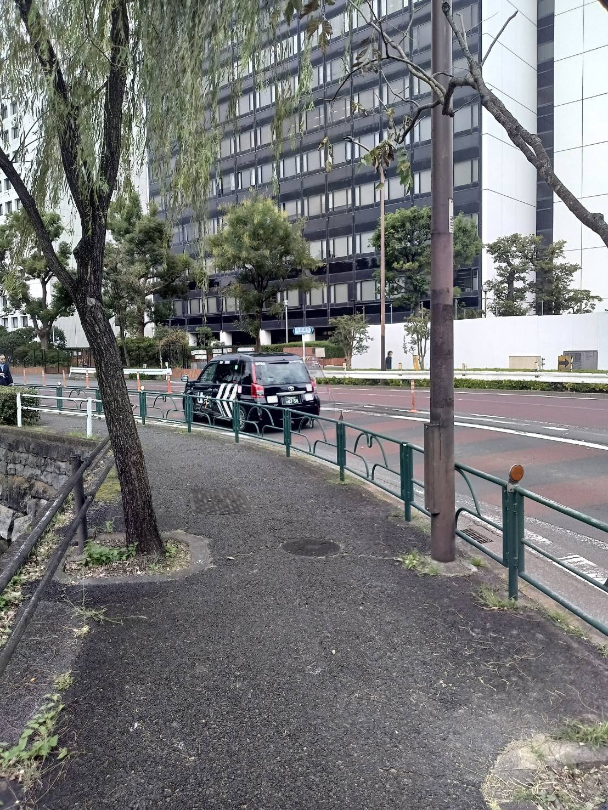

2025-12-27 05:23:48
問合せ：大会実行委員長 宮野 繁
070-5035-4441
megane0912@yahoo.ne.jp

| No. | 開催日 | 曜 | 週 | 回数 | 大会名 | 備考 |
| 1 | 1月8日 | 木 | ② | 第329回 | ウィークリー | |
| 2 | 1月15日 | 木 | ③ | 第330回 | ウィークリー | 新年会 |
| 3 | 1月22日 | 木 | ④ | 第331回 | ウィークリー | |
| 4 | 1月29日 | 木 | ⑤ | 第332回 | ウィークリー | |
| 5 | 2月5日 | 木 | ① | 第333回 | ウィークリー | |
| 6 | 2月12日 | 木 | ② | 第334回 | ウィークリー | |
| 7 | 2月19日 | 木 | ③ | 第335回 | ウィークリー | |
| 8 | 2月26日 | 木 | ④ | 第336回 | ウィークリー | |
| 9 | 3月5日 | 木 | ① | 第337回 | ウィークリー | |
| 10 | 3月12日 | 木 | ② | 第338回 | ウィークリー | |
| 11 | 3月19日 | 木 | ③ | 第339回 | ウィークリー | |
| 12 | 3月26日 | 木 | ④ | 第340回 | ウィークリー | |
| 13 | 4月2日 | 木 | ① | 第341回 | ウィークリー | |
| 14 | 4月9日 | 木 | ② | 第342回 | ウィークリー | |
| 15 | 4月16日 | 木 | ③ | 第343回 | ウィークリー | |
| 16 | 4月23日 | 木 | ④ | 第344回 | ウィークリー | |
| 17 | 4月30日 | 木 | ⑤ | 第345回 | ウィークリー | |
| 18 | 5月7日 | 木 | ① | 第346回 | ウィークリー | |
| 19 | 5月14日 | 木 | ② | 第347回 | ウィークリー | |
| 20 | 5月21日 | 木 | ③ | 第348回 | ウィークリー | |
| 21 | 5月28日 | 木 | ④ | 第349回 | ウィークリー | |
| 22 | 6月4日 | 木 | ① | 第350回 | ウィークリー | |
| 23 | 6月11日 | 木 | ② | 第351回 | ウィークリー | |
| 24 | 6月18日 | 木 | ③ | 第352回 | ウィークリー | |
| 25 | 6月25日 | 木 | ④ | 第353回 | ウィークリー | |
| 26 | 7月2日 | 木 | ① | 第354回 | ウィークリー |
| No. | 開催日 | 曜 | 週 | 回数 | 大会名 | 備考 |
| 27 | 7月9日 | 木 | ② | 第355回 | ウィークリー | |
| 28 | 7月16日 | 木 | ③ | 第356回 | ウィークリー | |
| 29 | 7月23日 | 木 | ④ | 第357回 | ウィークリー | |
| 30 | 7月30日 | 木 | ⑤ | 第358回 | ウィークリー | |
| 31 | 8月6日 | 木 | ① | 第359回 | ウィークリー | |
| 32 | 8月13日 | 木 | ② | 第360回 | ウィークリー | |
| 33 | 8月20日 | 木 | ③ | 第361回 | ウィークリー | |
| 34 | 8月27日 | 木 | ④ | 第362回 | ウィークリー | |
| 35 | 9月3日 | 木 | ① | 第363回 | ウィークリー | |
| 36 | 9月10日 | 木 | ② | 第364回 | ウィークリー | |
| 37 | 9月17日 | 木 | ③ | 第365回 | ウィークリー | |
| 38 | 9月24日 | 木 | ④ | 第366回 | ウィークリー | |
| 39 | 10月1日 | 木 | ① | 第367回 | ウィークリー | 周年記念 |
| 40 | 10月8日 | 木 | ② | 第368回 | ウィークリー | |
| 41 | 10月15日 | 木 | ③ | 第369回 | ウィークリー | |
| 42 | 10月22日 | 木 | ④ | 第370回 | ウィークリー | |
| 43 | 10月29日 | 木 | ⑤ | 第371回 | ウィークリー | |
| 44 | 11月5日 | 木 | ① | 第372回 | ウィークリー | |
| 45 | 11月12日 | 木 | ② | 第373回 | ウィークリー | |
| 46 | 11月19日 | 木 | ③ | 第374回 | ウィークリー | |
| 47 | 11月26日 | 木 | ④ | 第375回 | ウィークリー | |
| 48 | 12月3日 | 木 | ① | 第376回 | ウィークリー | |
| 49 | 12月10日 | 木 | ② | 第377回 | ウィークリー | |
| 50 | 12月17日 | 木 | ③ | 第378回 | ウィークリー | |
| 51 | 12月24日 | 木 | ④ | 第379回 | ウィークリー | 忘年会 |
| 52 | 12月31日 | 木 | ④ | 第380回 | ウィークリー |
